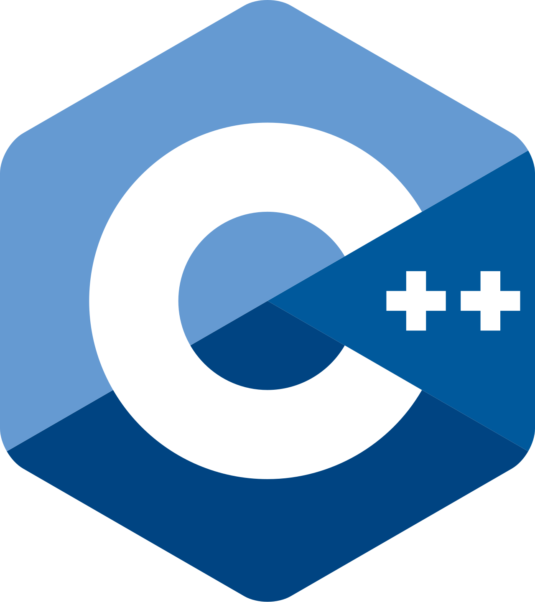
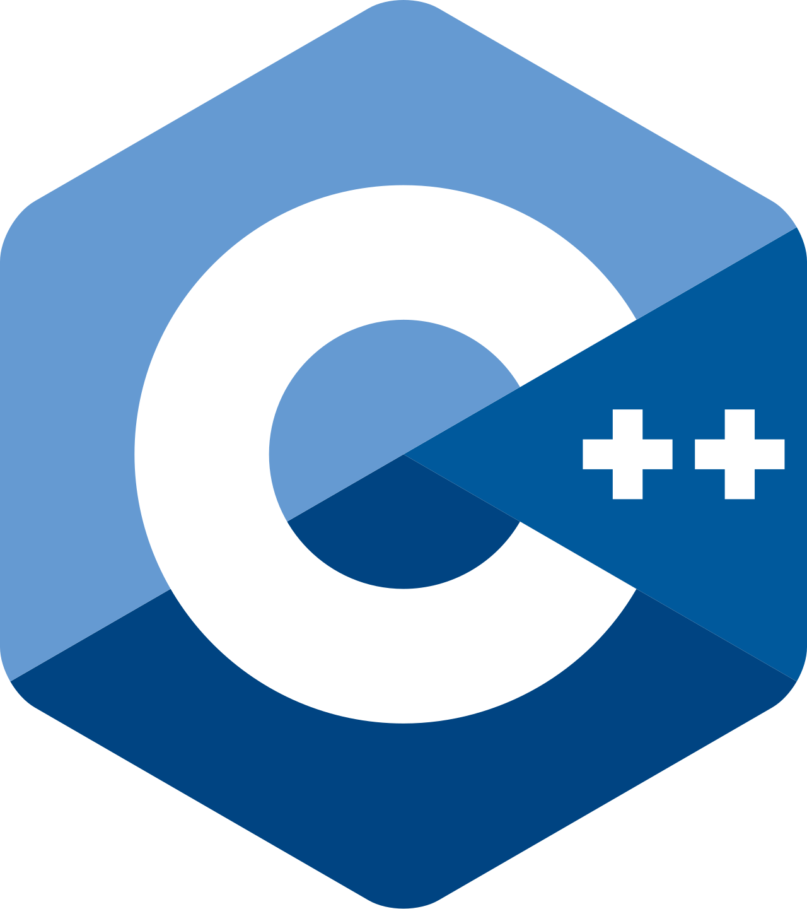

Oscar Lennox-Hilton
Full-stack developer building with...


 



Professional work
TRL Software
Working on all aspects of projects, including front-end UI development, back-end microservices, database management, and deployment pipelines - I also developed several tools for internal use to make development easier.
Open source
LibreOffice
I am currently contributing to LibreOffice, tracking down and fixing bugs coming in from crash reports. This has been a great opportunity to dust off my C++ skills, which I've used a lot less since university.
University projects
Ray Tracing
For my Graphics and Computational Programming module, I built a ray tracer in C++ that features diffuse shading, microfacets, and shadows. The ray tracer utilises multithreading for improved performance.
Pathfinding AI
The AI Programming module explored machine learning with application to real problems. We created simple neural networks and maze-solving programs that compared trained AI models with the A* search algorithm.
OpenGL Renderer
In my second year, I learned about the GPU graphics pipeline and programming with OpenGL and by the end of the module, I had produced a complete 3D rendering engine in C++.
Citadel
This group project was my first experience working with multiple people on the same codebase, where I learned the fundamentals of well-maintained version control.
Personal projects
Discord Bot
Work in progress, I'm currently exploring the possibility of using OpenAI's API to integrate a GPT model to tinker with.
This Website!
I'm using this website as a playground for web features, such as the background effect following your cursor right now.
In the screenshot above, you can see an iteration that (while looking pretty cool) was wildly out of control. Always double check your maths.
Mini RPG
A game made in Unity, for which I created a complete framework for scripting custom spells and enemy behaviour with minimal effort.
I considered adding multiplayer functionality, which led to my next game project...
.io Shooter
This time, built in JavaScript to run in the web browser using WebSockets. By running the server on my PC and port forwarding, my friends and I could connect to a session and play together instantly.
This project also taught me a lot about writing optimised JavaScript for smooth performance on any device.